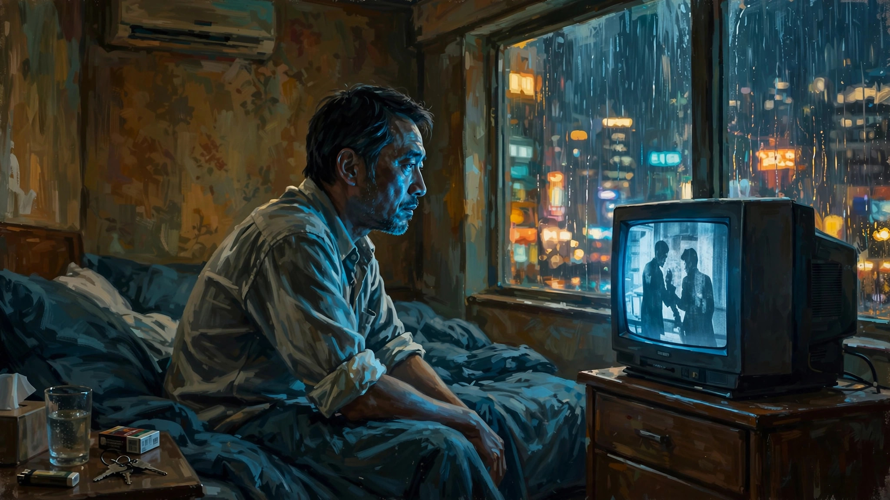

男人四十（不是花）
欢迎点击上方名片关注我。你的支持是我坚持原创的最大动力。
（今天更一个短的，有感而发，见谅）
在香港的酒店休息无事看看电视。正在播的是一部2001年的老港片，许鞍华导，张学友林嘉欣主演的《男人四十》。

影片情节很简单。基本主线是中年人的婚姻和感情危机（老片也无所谓剧透了）。张学友（懒得讲角色名了，以下都用演员名）演的中学教师有一个貌似和美的家庭，妻子梅艳芳体贴温柔，两个儿子都在读中学（貌似一个高中一个初中？），健康阳光无明显叛逆。教师工作在香港当时的社会也算体面。就这样的背景下，却在他们夫妻间潜藏着危机。
梅艳芳偶遇多年前利用欺骗她感情并害她堕胎的禽兽老师，得知后者患了绝症时日无多，心生同情。不但如此，她竟然还鬼迷心窍地向丈夫张学友提出要去照顾这个曾经深深伤害她的旧情人，要“送他最后一程”。可想而知张学友听到后心里有多少头“草尼玛”奔腾而过。
差不多同时，张学友带的班里有位女高中生林嘉欣不知怎么开始迷恋上他。这个女生平时相当叛逆，对其他老师甚至校长都敢顶嘴甚至出言不逊那种程度。家里情况不明，父母基本不露面。她还时不时帮家里看下店。
林嘉欣看上张学友以后就对他展开了主动大胆的各种挑逗和追求。2000年初的香港文艺电影还是挺含蓄。但各种暧昧的镜头让荷尔蒙都散发到屏幕外了。张学友刚开始还一本正经试图与女生保持距离，但终究是小头控制了大头，一步步陷入女生编织的情网，最终做了越界的事。
之后，张学友本想向梅艳芳坦白外遇，但被梅艳芳转述旧情人之事打断。梅艳芳提到旧情人再次晕倒送医，这次恐怕出不了院了。张学友主动提出去看望这位禽兽老师（当年他和梅艳芳是同班同学，亲历了老师对梅艳芳的祸害，也喜提“接盘侠”称号）。表面上是怜悯曾经的老师送他一程，实际上却阴阳怪气地把老师羞辱报复了一通。
影片的尾声是张学友和梅艳芳的一小段对话。我当年第一次看这段对话是什么心情完全没印象了（可能就是没留意或者没看懂）。今天看了，有点震动。（以下对话只是根据记忆整理的大意不一定逐字相符）
梅艳芳：你是不是不想跟我过下去了？我可以出去找事做……
张学友（几乎是秒答）：也好，你会中文打字嘛。以后随时回来看看儿子。
梅艳芳听后立时泪如雨下，张学友则若无其事地抱她入怀，轻轻安抚。
晚上刷到一个短视频。说男人到了40，结婚十多年了，孩子也长大了，现在但凡对方提出一句离婚，马上同意签字。
再回味这部老电影的结尾，瞬间懂了。